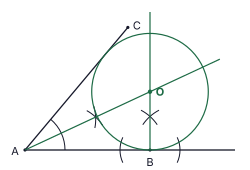
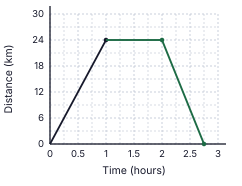
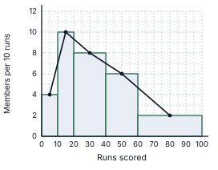
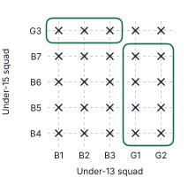
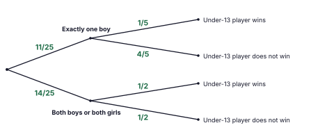

9. a = ∠ACB, marked at C between CA and CB. b = angle between the dashed horizontal through B and BC, marked at B. The two horizontal lines are parallel, so a and b are alternate angles.
Final answer: a = b (angle of elevation = angle of depression)

1. Work-days: 6 × 20 = 120. Workers needed for 8 days = 120 ÷ 8 = 15. Extra workers = 15 − 6.
Final answer: 9 workers
(Marks 2)2. Draw a line through E parallel to AB. Alternate angles: the part of ∠AED next to EA = x. Interior angles on the same side (EF ∥ CD): the other part = 180° − 70° = 110°. So x + 110° = 150°.
Final answer: x = 40°
(Marks 2)3. 12x + 35x − 310x = 5 + 6 − 310x (LCM = 10x)
Final answer: 810x = 45x
(Marks 2)4. The faces of a right triangular prism are 2 triangles and 3 rectangles (a rectangle may be a square). A trapezium cannot be a face.
Final answer: (iii) a trapezium ✓
(Marks 2)5. 180° ↔ 36 members, so 1° ↔ 36 ÷ 180 = 0.2 member. Fielding: 40° → 40 × 0.2 (= 36 × 40 ÷ 180).
Final answer: 8 members
(Marks 2)6. E is on the minor arc, so ∠ADB = 180° − 130° = 50° (opposite angles of cyclic quadrilateral AEBD). DC passes through the centre and C is the mid-point of AB, so DC ⟂ AB and DC bisects ∠ADB. ∠CDB = 50° ÷ 2.
Final answer: ∠CDB = 25°
(Marks 2)7. 3x² − 48 = 3(x² − 16) = 3(x² − 4²)
Final answer: 3(x − 4)(x + 4)
(Marks 2)8. lg 400 = lg (4 × 10²) = lg 4 + 2 = 0.6021 + 2
Final answer: 2.6021
(Marks 2)9. a = ∠ACB, marked at C between CA and CB. b = angle between the dashed horizontal through B and BC, marked at B. The two horizontal lines are parallel, so a and b are alternate angles.
Final answer: a = b (angle of elevation = angle of depression)
10. Curved surface = 2πr × 5r = 10πr2; base = πr2. Ratio = 10πr2 : πr2
Final answer: 10 : 1
(Marks 2)11. Total outcomes = 4 × 4 = 16. Sum 10: (3, 7), (5, 5), (7, 3) → 3 outcomes.
Final answer: 316
(Marks 2)12. AB = BD: ∠BDA = ∠DAB = 35°, so exterior ∠DBC = 35° + 35° = 70°. BC = DC: ∠BDC = ∠DBC = 70°. Angles of triangle BCD: x = 180° − 70° − 70°.
Final answer: x = 40°
(Marks 2)13. A = {2, 3, 5, 7}, B = {3, 6, 9}. A ∩ B = {3} (true). A ∪ B = {2, 3, 5, 6, 7, 9} (so (ii) is false). A′ has 10 − 4 = 6 elements (so (iii) is false).
Final answer: (i) ✓
(Marks 2)14. 36a6b4 ÷ 6a3b2
Final answer: 6a3b2
(Marks 2)15. Common ratio r = (−20) ÷ (−40) = 12. T4 = −20 × 12 = −10, T5 = −10 × 12.
Final answer: −5
(Marks 2)16. ∠BDC = ∠BAC = 26° (angles in the same segment). BD bisects ∠ADC, so ∠ADC = 52°. ∠CBE = ∠ADC (exterior angle of a cyclic quadrilateral equals the interior opposite angle).
Final answer: ∠CBE = 52°
(Marks 2)17. HCF of the coefficients 12, 18, 30 = 6; lowest power of a = a; lowest power of b = b2.
Final answer: 6ab2
(Marks 2)18. Prism volume = 2464 × h. πr2h = 2464h ⇒ 227 r2 = 2464 ⇒ r2 = 2464 × 722 = 784.
Final answer: r = 28 cm
(Marks 2)19. DE ∥ BC and BC = 2 × DE = 24 cm (mid-point theorem). AE² = 5² + 12² = 169, AE = 13 cm, so EC = AE = 13 cm. DB = AD = 5 cm. Perimeter = DB + BC + CE + ED = 5 + 24 + 13 + 12.
Final answer: 54 cm
(Marks 2)20. Gradient = 1 − 75 − 2 = −2. Using (2, 7): y − 7 = −2(x − 2) ⇒ y = −2x + 11.
Final answer: y = −2x + 11 (or 2x + y = 11)
(Marks 2)21. ∠DAB = ∠BCD = 70° (opposite angles of a parallelogram). ∠DEB = ∠DAB = 70° (angles in the same segment; A and E are on the same side of DB).
Final answer: ∠DEB = 70°
(Marks 2)22. Sum = P: P × 1.04² = 67 600 ⇒ P = 67 600 ÷ 1.0816. (Check: 4% of 1.04P = 2 600 ⇒ 1.04P = 65 000 ⇒ P = 62 500.)
Final answer: Rs. 62 500
(Marks 2)23. OA ∥ BD: ∠OBD = ∠AOB = 70° (alternate angles). OB = OD, so ∠ODB = 70° and ∠BOD = 180° − 140° = 40°. ∠BED = ½ ∠BOD (angle at centre = 2 × angle at circumference).
Final answer: ∠BED = 20°
(Marks 2)24. 4x > 3 − 15 ⇒ 4x > −12 ⇒ x > −3. Negative integers greater than −3:
Final answer: x = −2, −1
(Marks 2)25. Bisect ∠BAC: the bisector through A passes through the crossing point of the two arcs. At B draw the perpendicular to AB through the crossing point of the two arcs. The bisector and the perpendicular meet at O (OB = distance from O to AC). In the figure O lies directly above B, at a height of AB × tan(25°) ≈ 0.47 AB.
Final answer: O = intersection of the bisector of ∠BAC and the perpendicular to AB at B (1 mark for each line)

| (i) | |
| 1 − 15 = 45 | 1 |
| (ii) | |
| Other expenses = 38 × 45 = 310 | 1 |
| Fraction left = 45 − 310 = 12 | 1 |
| (iii) | |
| Money received = 47 500 ÷ 12 = Rs. 95 000 (or 47 500 × 2) | 1 |
| Fuel = 15 × 95 000 = Rs. 19 000; other expenses = 310 × 95 000 = Rs. 28 500 | 1 |
| (iv) | |
| Part of the money received above Rs. 75 000 = 95 000 − 75 000 = Rs. 20 000 | 1 |
| This is 80% of the income above Rs. 75 000 (tax is 20%): income above Rs. 75 000 = 20 000 × 100 ÷ 80 = Rs. 25 000 | 1 |
| Income before tax = 75 000 + 25 000 = Rs. 100 000 | 1 |
| (v) | |
| Fuel as a percentage of income = 19 000 ÷ 100 000 × 100 | 1 |
| = 19% | 1 |
Total marks: 10
| (a)(i) | |
| Horizontal line from (1, 24) to (2, 24) (stays for 1 hour at 24 km) | 1 |
| Straight line from (2, 24) down to (2.75, 0), i.e. 2 h 45 min (accept 2¾ ± one small square) | 1 |
| (a)(ii) | |
| Speed = distance ÷ time = 24 ÷ 34 | 1 |
| = 32 km/h | 1 |
| (b)(i) | |
| Length of the semicircular arc = 12 × 2 × 227 × 21 = 66 m | 1 |
| Perimeter = 66 + 33 + 42 + 33 (arc + BC + CD + DA) | 1 |
| = 174 m | 1 |
| (b)(ii) | |
| Area of rectangle = 42 × 33 = 1386 m2 | 1 |
| Area of semicircle = 12 × 227 × 21 × 21 = 693 m2 | 1 |
| 1386 ÷ 693 = 2 (2 times) | 1 |
Total marks: 10

| (i) | |
| Rates = 120 000 × 15100 | 1 |
| = Rs. 18 000 | 1 |
| (ii) | |
| Rent for the year = 15 000 × 12 = Rs. 180 000; maintenance = 10% of 180 000 = Rs. 18 000 | 1 |
| Money left = 180 000 − 18 000 − 18 000 = Rs. 144 000 | 1 |
| (iii)(a) | |
| Number of shares = 12 000 ÷ 6 (or 12 000 × 1/6) | 1 |
| = 2 000 shares | 1 |
| Total invested = 2 000 × 80 = Rs. 160 000 | 1 |
| (iii)(b) | |
| Extra money = 160 000 − 144 000 | 1 |
| = Rs. 16 000 | 1 |
| Percentage = 16 000160 000 × 100 = 10% | 1 |
Total marks: 10
| Runs scored | Number of members | Cumulative frequency |
|---|---|---|
| 0 – 10 | 4 | 4 |
| 10 – 20 | 10 | 14 |
| 20 – 40 | 16 | 30 |
| 40 – 60 | 12 | 42 |
| 60 – 100 | 8 | 50 |

| (i) | |
| Frequency = height × class width ÷ 10 (height is the number of members per 10 runs) | 1 |
| 10 and 16 (read heights 10, 8 → 10 × 1, 8 × 2) | 1 |
| 12 and 8 (heights 6, 2 → 6 × 2, 2 × 4) | 1 |
| (ii) | |
| Bars on the correct class intervals 0–10, 10–20, 20–40, 40–60, 60–100 (widths 10, 10, 20, 20, 40 runs) | 1 |
| Heights 4, 10, 8, 6, 2 (the tops of the bars lie at the same heights as the plotted points, at the class mid-values) | 1 |
| Bars adjacent with no gaps; drawn neatly | 1 |
| (iii) | |
| Cumulative frequencies 4, 14, 30, 42, 50 (all correct: 2 marks; only 2–3 of the missing values correct: 1 mark) | 2 |
| (iv) | |
| Members who scored 40 or more = 12 + 8 = 20 (or 50 − 30) | 1 |
| Probability = 2050 = 25 | 1 |
Total marks: 10
| (i) | |
| All 25 outcomes marked with X (all 25: 2 marks; 20 to 24 correct: 1 mark) | 2 |
| (ii) | |
| Closed curve(s) enclosing exactly the 11 outcomes with one boy: (G1, G2) with (B4, B5, B6, B7) = 8 and (B1, B2, B3) with G3 = 3 (one loop or two loops accepted) | 1 |
| Number of favourable outcomes = 11 out of 25 | 1 |
| P(exactly one boy) = 1125 | 1 |
| (iii) | |
| First branches: 1125 (exactly one boy) and 1425 (both boys or both girls: 12 + 2 = 14) | 1 |
| Branches after “exactly one boy”: 15 (wins) and 45 (does not win) | 1 |
| Branches after “both boys or both girls”: 12 and 12 | 1 |
| (iv) | |
| P(does not win) = 1125 × 45 + 1425 × 12 = 44125 + 725 | 1 |
| = 44125 + 35125 = 79125 | 1 |
Total marks: 10

